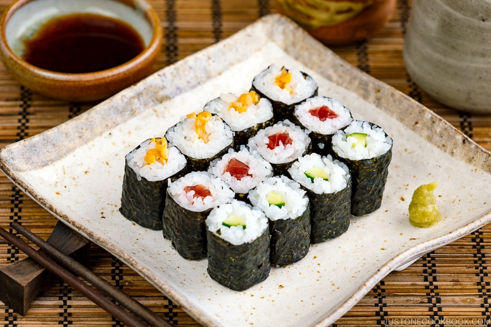

Classic Sushi Rolls

Ingredients
- Sushi Rice (Seasoned with Vinegar)
- Nori Sheets (Seaweed)
- Fresh Cucumber and Avocado
- Pickled Ginger & Wasabi
Step-by-Step Instructions
- Place a nori sheet on a bamboo rolling mat.
- Spread a thin, even layer of sushi rice over the nori.
- Place sliced vegetables in the center of the rice.
- Roll tightly using the mat and slice into bite-sized pieces.